Utah Pony Express Trail
 Danny Wahl
•
•
Danny Wahl
•
•
Today I took my KLR650 on the Pony Express Trail in Utah. It was a fun ride, definitely in the "beginner" category as far as difficulty, but surrounded by lots of great sights none the less.
You can see this was about a 350 mile ride and largely bypassed the mountain passes, which was nice since it was only about 40 degrees when I started out, though the high was 60 degrees later in the day.
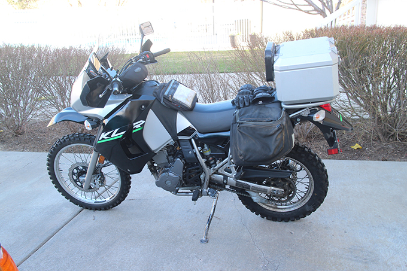
Here's the bike at the beginning of the day, ready to go, which was also the point of my first breakdown.
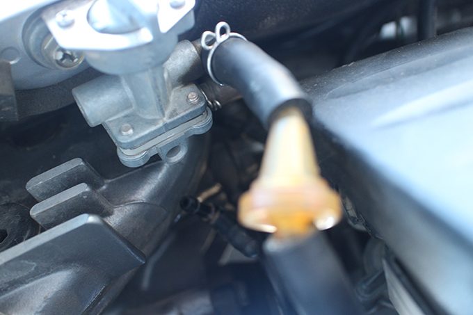
Looks like the fuel line disconnected itself, oops. After that it was a great ride. Here are some photos I took along the way.
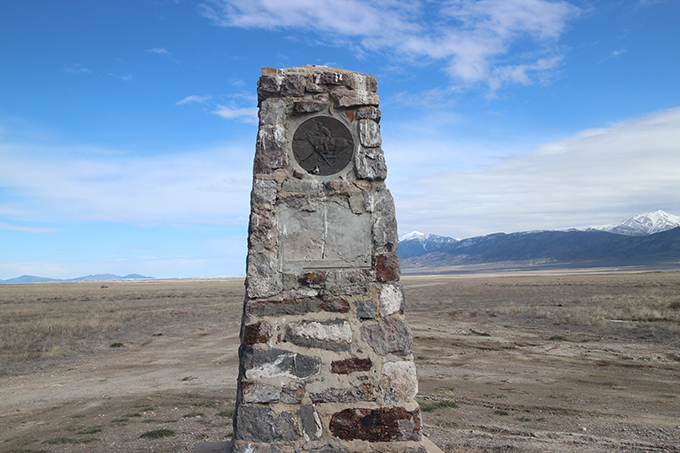
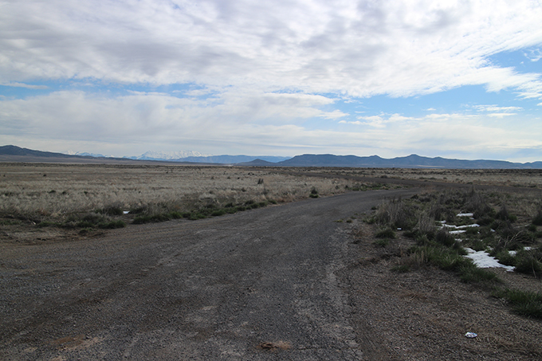
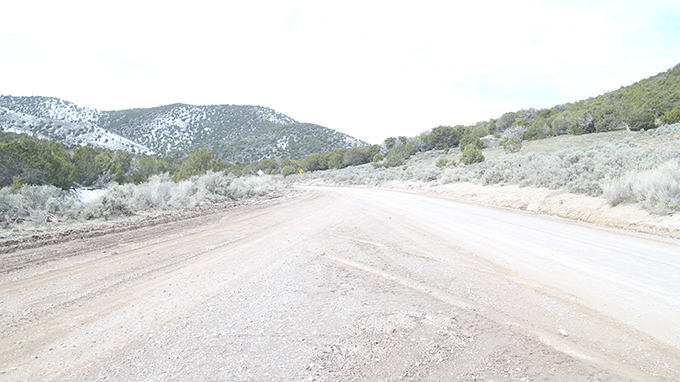
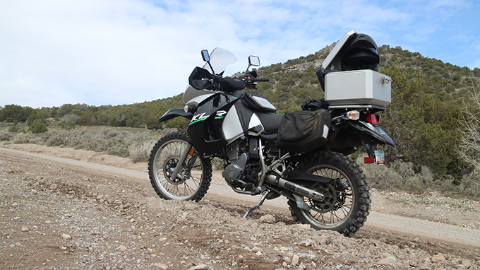
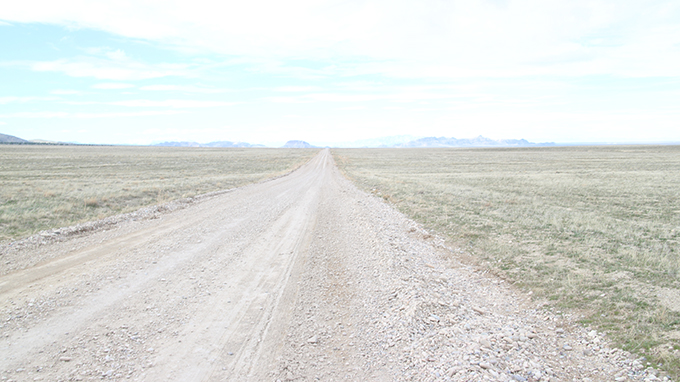
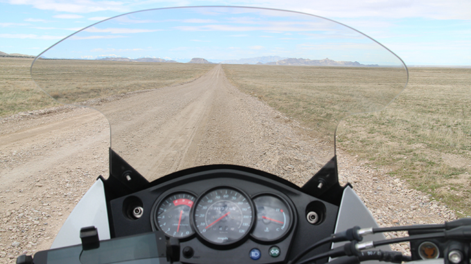
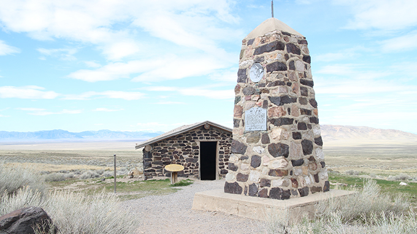
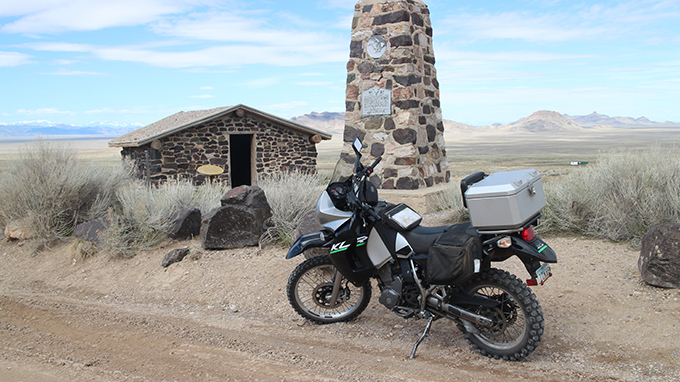
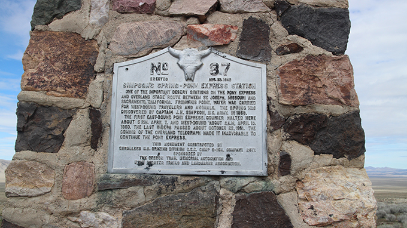
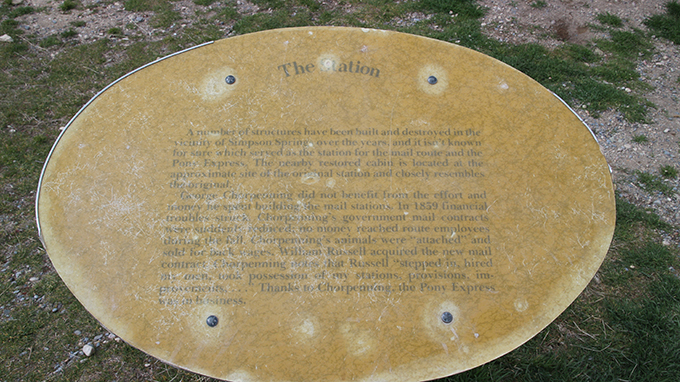
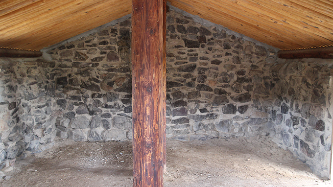
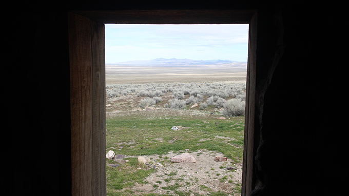
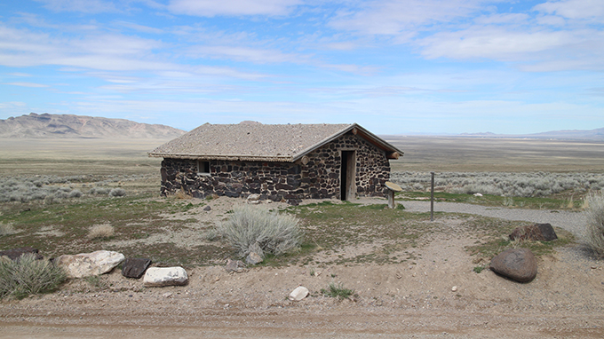
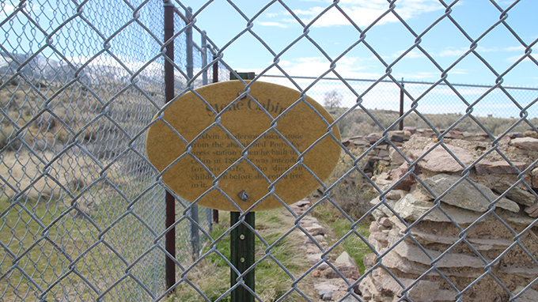
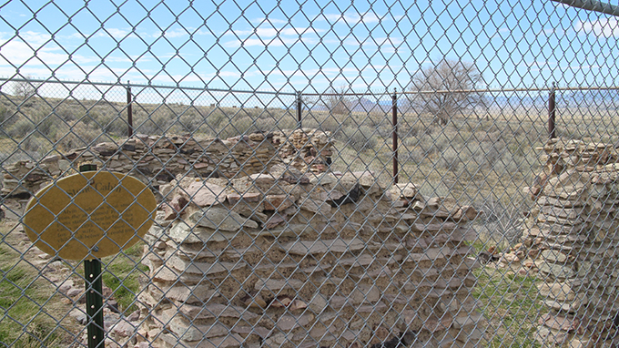
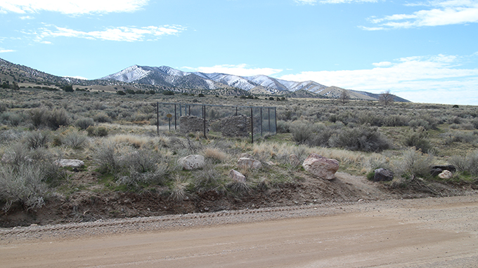
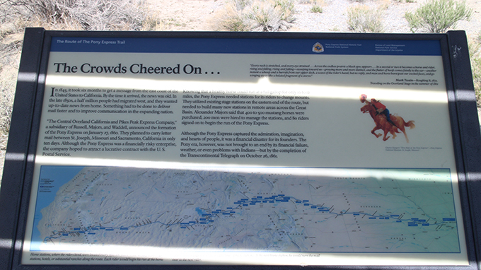
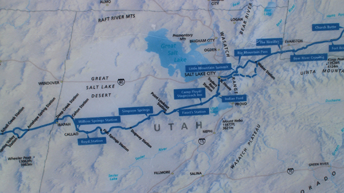
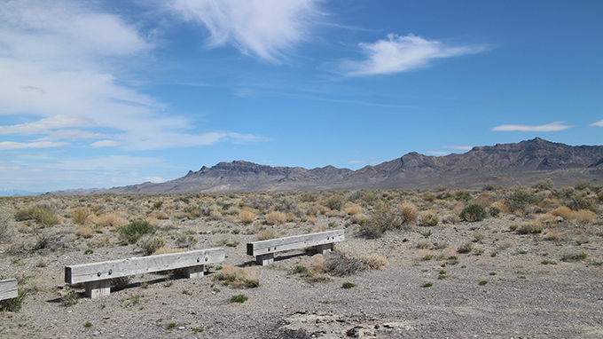
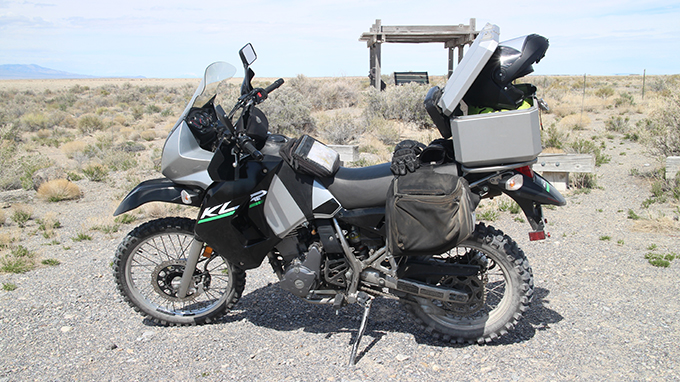
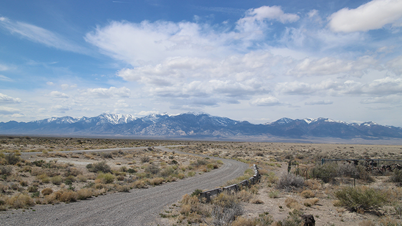
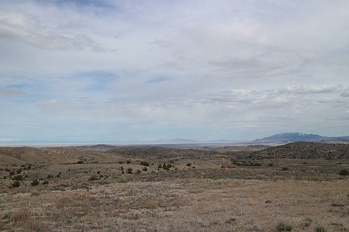
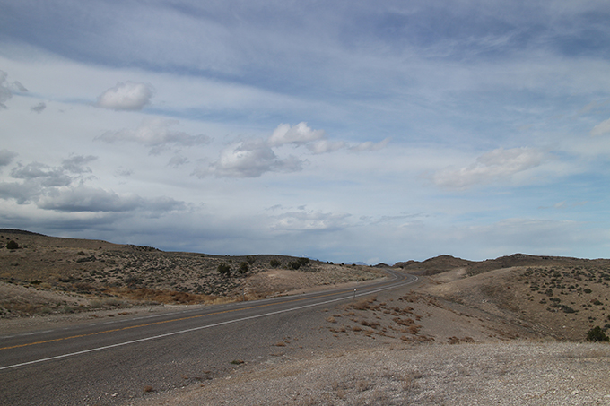